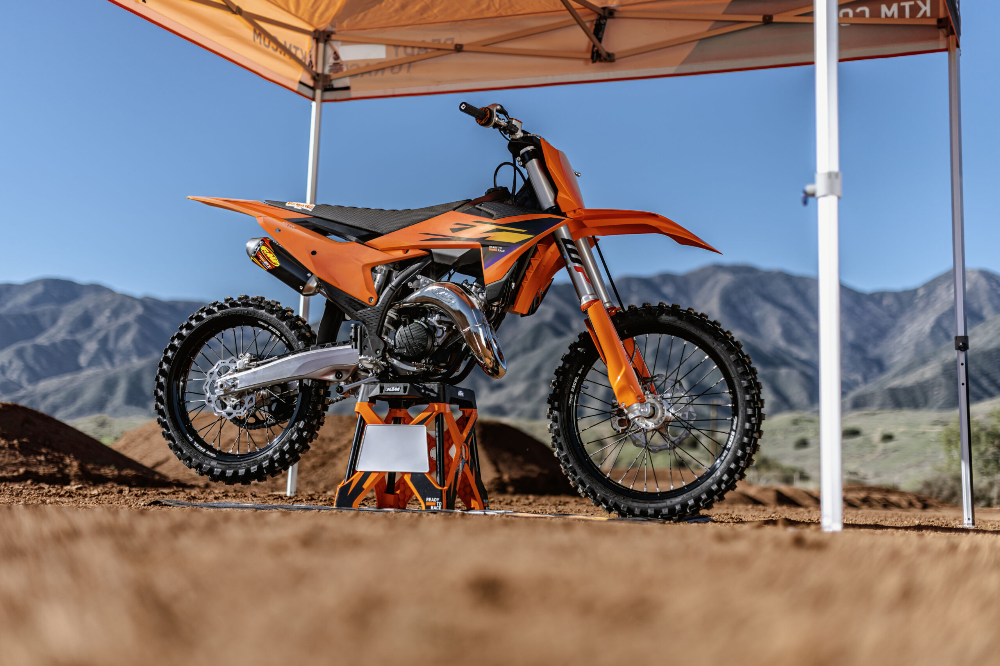

Historie KTM
KTM bylo založeno v roce 1934 Hansem Trunkenpolzem v Mattighofen v Rakousku. Původně se firma jmenovala „Kraftfahrzeuge Trunkenpolz Mattighofen" a zabývala se opravami vozidel a výrobou kovových součástí. První motocykl pod značkou KTM byl představen v roce 1953 — šlo o jednoduchý 98cc stroj R100.
V 60. a 70. letech se KTM zaměřilo na závodní sport a začalo dominovat v motokrosu a enduro závodech. Firma prošla v 90. letech těžkým obdobím a v roce 1991 zbankrotovala. Po restrukturalizaci se KTM zaměřilo výhradně na off-road segment, což se ukázalo jako klíčové rozhodnutí.
Od roku 2000 KTM zažívá nepřetržitý růst. Firma postupně rozšiřovala nabídku o silniční modely a dnes patří mezi největší výrobce motocyklů v Evropě. KTM je také majoritním vlastníkem značek Husqvarna, GasGas a GASGAS, čímž ovládá velkou část off-road segmentu.
V závodním sportu KTM sbírá tituly pravidelně — v Dakar Rally získalo značka přes 20 vítězství v řadě. V motokrosu a enduro závodech jsou stroje KTM synonymem vítězství. Motto „Ready to Race" není jen marketingový slogan — KTM skutečně staví motorky přímo inspirované závodní technikou.
Novinky 2025
Pro rok 2025 KTM představilo zásadní novinky napříč celým modelovým spektrem. Nová generace enduro modelů řady EXC přichází s přepracovaným jednoválcovým motorem, který přináší výrazně vyšší výkon při nižší hmotnosti. Nový hliníkový rám je tužší a zároveň lehčí než předchůdce.
Elektrický model FREERIDE E-XC prošel výrazným vývojem — nová baterie nabízí delší dojezd a rychlejší nabíjení. KTM tak potvrzuje, že elektřina má budoucnost i v off-road světě. V silničním segmentu nový 990 Duke přináší výkon přes 120 koní při hmotnosti pod 180 kg.